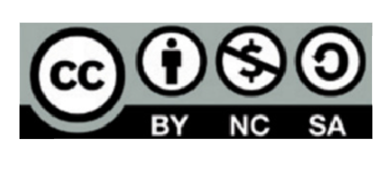

“La presente publicación pertenece al Instituto Nacional de Ciberseguridad (INCIBE) y está bajo una licencia Reconocimiento-No comercial-CompartirIgual 4.0 Internacional de Creative Commons. Por esta razón está permitido copiar, distribuir y comunicar públicamente esta obra bajo las condiciones siguientes:
- Reconocimiento. El contenido de esta publicación se puede reproducir total o parcialmente por terceros, citando su procedencia y haciendo referencia expresa a INCIBE y al servicio de la Ofcina de Seguridad del Internauta (OSI) y sus sitios web: https://www.incibe.es y https://www.osi.es. Dicho reconocimiento no podrá en ningún caso sugerir que INCIBE presta apoyo a dicho tercero o apoya el uso que hace de su obra.
- Uso No Comercial. El material original y los trabajos derivados pueden ser distribuidos, copiados y exhibidos mientras su uso no tenga fnes comerciales.
- Compartir Igual. Si altera o transforma esta obra, o genera una obra derivada, sólo puede distribuirla bajo esta misma licencia.
Al reutilizar o distribuir la obra, tiene que dejar bien claro los términos de la licencia de esta obra. Alguna de estas condiciones pueden no aplicarse si se obtiene el permiso de INCIBE como titular de los derechos de autor.
Texto completo de la licencia: https://creativecommons.org/licenses/by-nc-sa/4.0/deed.es_ES